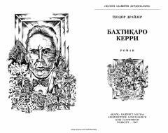

BKYosh qizning Chikagoda baxt izlab ketgan hayot yo'li haqida roman.
Teodor Drayzerning 'Baxtiqaro Kerri' romani Karolina Miber ismli yosh qizning Chikago shahriga kelishi va u yerda hayot sinovlari bilan yuzlashuvini tasvirlaydi. Asar 1889 yilgi Amerika jamiyatidagi ijtimoiy tengsizlik, orzu va moddiy ne'matlar ortidagi kurashni realistik tarzda aks ettiradi. Kitob Erkin Nosirov tomonidan ruscha asliyatdan o'zbek tiliga tarjima qilingan.